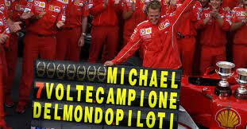
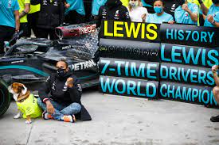

Michael Schumacher born 3 January 1969 is a German former racing driver who competed in Formula One for Jordan, Benetton, Ferrari, and Mercedes. Schumacher has a joint-record seven World Drivers' Championship titles (tied with Lewis Hamilton) and, at the time of his retirement from the sport in 2012, he held the records for the most wins (91), pole positions (68), and podium finishes (155)—which have since been broken by Hamilton—while he maintains the record for the number of total fastest laps (77), among others.
Sir Lewis Carl Davidson Hamilton is a British racing driver currently competing in Formula One, driving for Mercedes. In Formula One, Hamilton has won a joint-record seven World Drivers' Championship titles (tied with Michael Schumacher), and holds the records for the most wins (103), pole positions (104), and podium finishes (197), among others.
| Driver | Wins | Laps Lead | Points | Pole Positions | Fasest Laps |
|---|---|---|---|---|---|
| Lewis H. | 103 | 5,447 | 4639 | 104 | 65 |
| Michael S. | 91 | 5,111 | 4,660 | 68 | 77 |